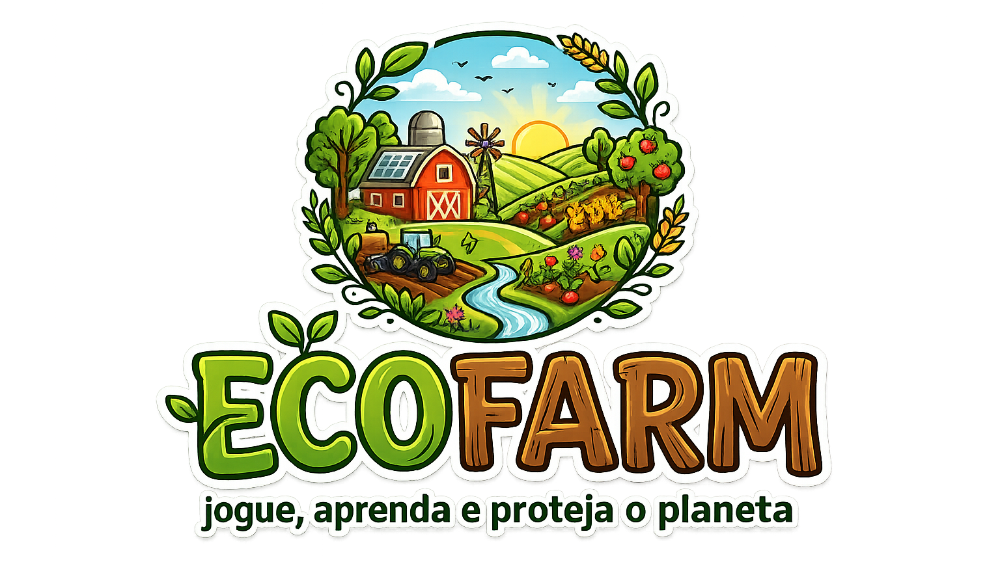
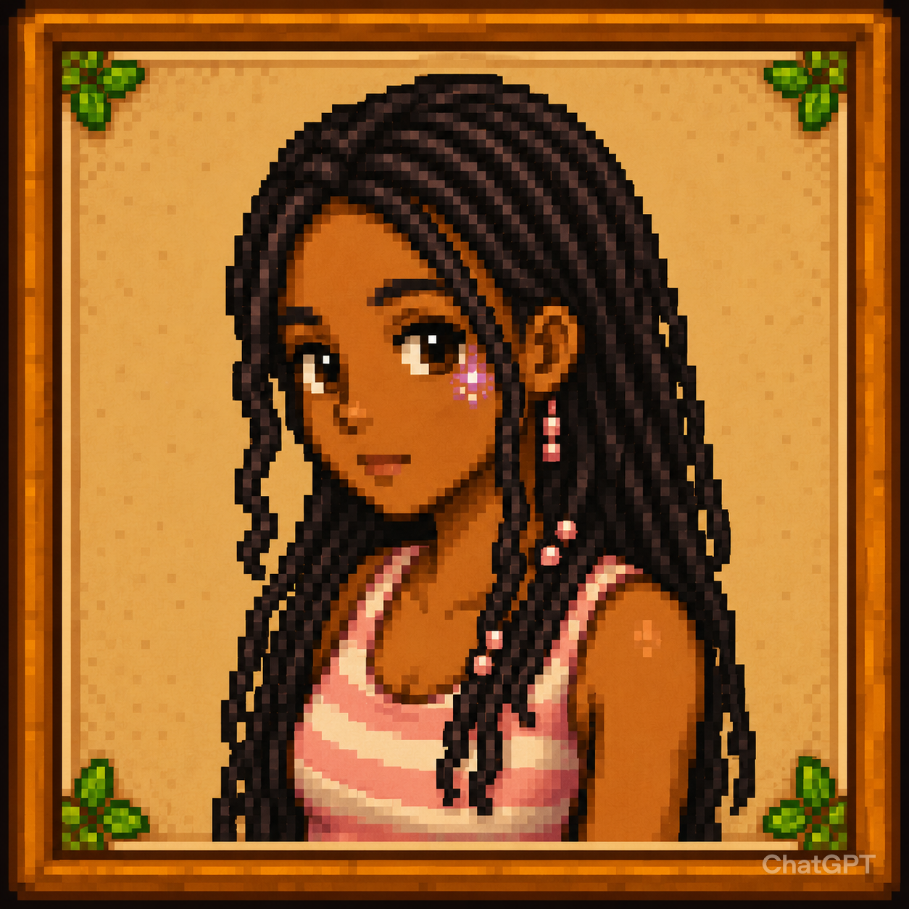
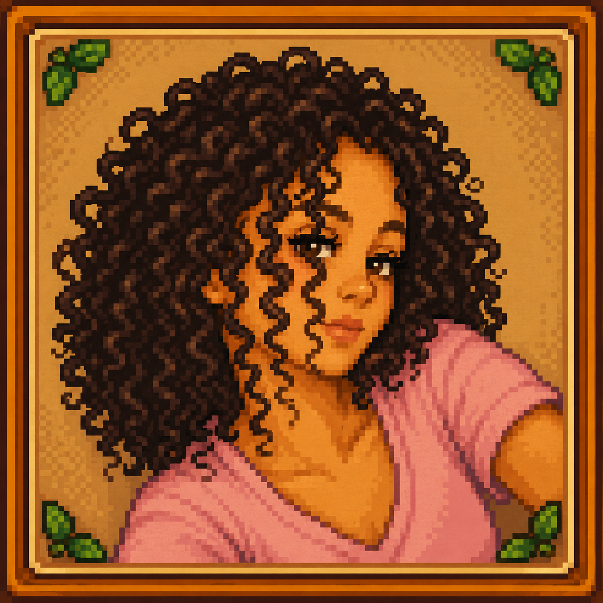
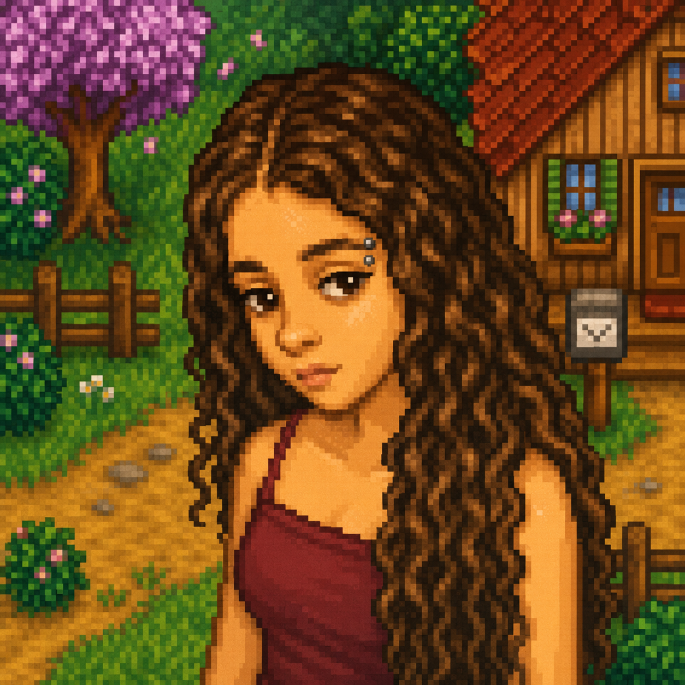

EcoFarm é um jogo de fazenda sustentável inspirado em jogos como Stardew Valley. Nele, o jogador cuida de sua própria fazenda, planta alimentos, cria animais e ajuda a natureza a crescer novamente.
Eduarda Cristina - Programadora
Helena Fernandes - Programadora



HTML e CSS (site)
Java (jogo)
Em EcoFarm, o jogador deve administrar uma fazenda sustentável e reduzir a poluição do ambiente.
Durante o jogo, é possível plantar culturas, cuidar dos animais, limpar áreas contaminadas e expandir a fazenda utilizando moedas e energia.
A cada ação realizada, os recursos da fazenda mudam, sendo necessário equilibrar economia e sustentabilidade.
Ao passar dos dias, a fazenda gera lucro através das plantas e dos animais.
O objetivo principal é diminuir a poluição, acumular moedas e transformar a fazenda em um lugar saudável e ecológico.
A ODS 13 faz parte dos Objetivos de Desenvolvimento Sustentável da ONU e tem como foco combater as mudanças climáticas e seus impactos no planeta.
Seu principal objetivo é incentivar ações sustentáveis, como a redução da poluição, preservação da natureza, uso consciente dos recursos naturais e diminuição do aquecimento global.
A ODS 13 busca conscientizar as pessoas sobre a importância de proteger o meio ambiente para garantir um futuro mais seguro e saudável para todos.